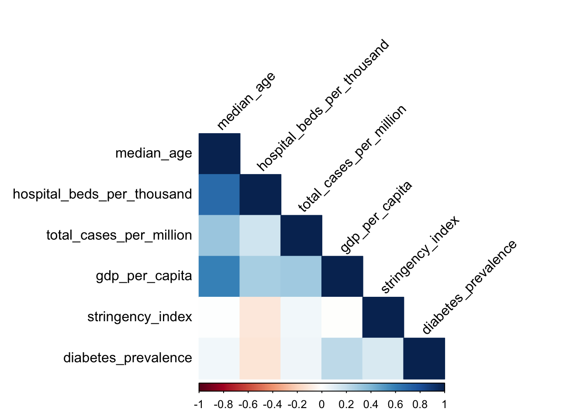
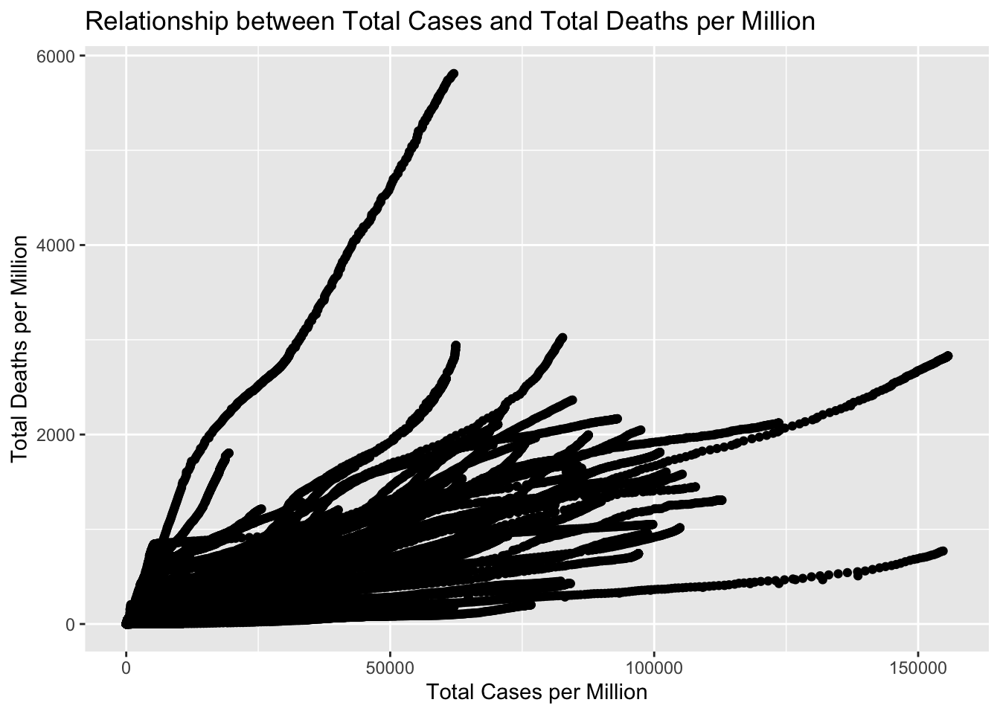
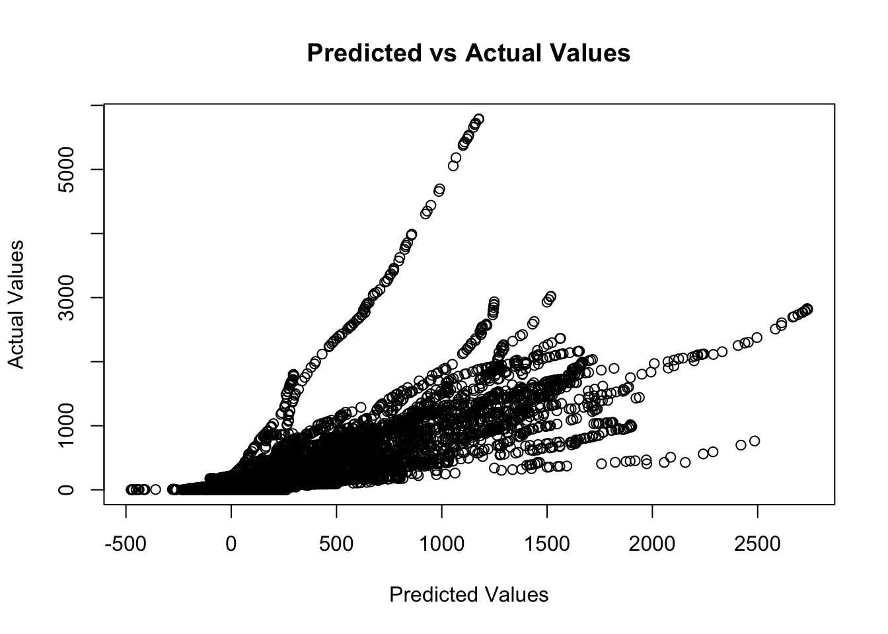
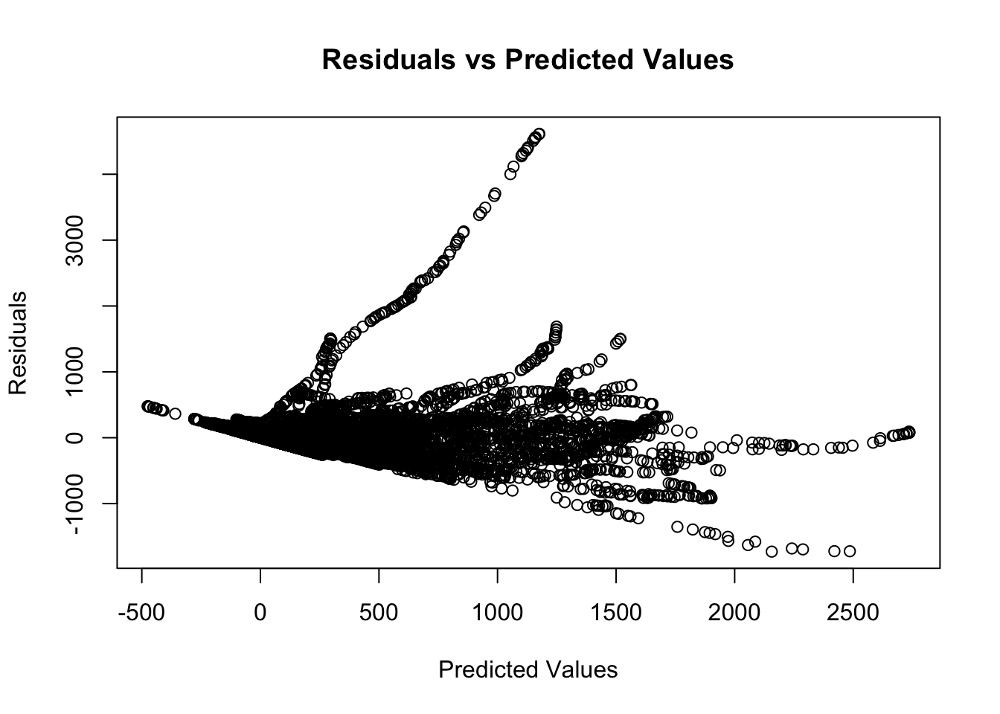

The disastrous effects that a highly contagious disease can have on the world have been strongly illustrated by the COVID-19 pandemic. Millions of people have passed away as a consequence of the pandemic and also impacted the lives of billions of people around the world. Current state of affairs has brought to light the necessity for research on factor and tactics to effectively combat pandemics in the future.
It’s critical to comprehend the variables affecting COVID-19 mortality as the pandemic spreads further. The goal of this study is to look at the correlations between a nation’s COVID-19 mortality rate and its population density, median age, GDP per-capita, prevalence of diabetes, hospital beds per 1,000 people, and human development index.
In this project I’m aiming to research To what extent do these socioeconomic factors contribute to the variation in COVID-19 mortality rate across the world and derive the relationship of COVID-19 mortality rate with population density,median age, GDP per capita, diabetes prevalence, hospital beds per thousand people and human development index.
#DataSet
The data set contains time series data of around 193 countries around the world. There are around 84,000 records for daily data of the countries over the period of time since 2020-03 to 2021-06 which is around 465 records per country.
Multiple linear regression models will be used to carry out the analysis. The socioeconomic determinants will be the independent variables, where as the COVID-19 mortality rate will be the dependent variable.
Expected Results:
The findings of this investigation will aid in understanding the variables affecting the COVID-19 mortality rate. Population density, median age, diabetes prevalence, and hospital beds per thousand people are anticipated to have a positive correlation with the COVID-19 mortality rate, whereas GDP per capita and the human development index are anticipated to have a negative correlation. Planning public health policies and actions to lessen the effects of COVID-19 will benefit from the findings.
Goal:
The goal of this study is to understand the relationship between socioeconomic factors and the COVID-19 mortality rate. The results will be helpful in planning public health policy and initiatives and will shed light on the factors that affect the COVID-19 death rate.
#Code
Load the dataset and check for the missing value patterns. Remove rows with missing values after reviewing. After going through the rows with empty values, it has been evident that rows with continent-wise data and worldwide data has empty cells. Therefore removing the rows with empty values will leave us with country specific data.
After going through multiple articles, there are five factors that have been very influential during the covid-19 crisis such as gdp per capita, median age, hospital beds availability, diabetic prevalence and stringency index.
# Remove rows with missing valuesdata <-na.omit(covid_data_subset)data <-unique(data)summary(data)
total_deaths_per_million total_cases_per_million gdp_per_capita
Min. : 0.001 Min. : 0.02 Min. : 661.2
1st Qu.: 10.356 1st Qu.: 627.90 1st Qu.: 7292.5
Median : 68.378 Median : 3794.89 Median : 15847.4
Mean : 309.301 Mean : 15095.14 Mean : 22175.7
3rd Qu.: 363.305 3rd Qu.: 18926.86 3rd Qu.: 32605.9
Max. :5810.533 Max. :155658.77 Max. :116935.6
median_age stringency_index diabetes_prevalence
Min. :15.10 Min. : 0.00 Min. : 0.990
1st Qu.:25.70 1st Qu.: 50.93 1st Qu.: 5.500
Median :32.20 Median : 64.35 Median : 7.110
Mean :32.58 Mean : 62.80 Mean : 7.763
3rd Qu.:41.20 3rd Qu.: 76.85 3rd Qu.: 9.740
Max. :48.20 Max. :100.00 Max. :22.020
hospital_beds_per_thousand
Min. : 0.100
1st Qu.: 1.300
Median : 2.500
Mean : 3.099
3rd Qu.: 4.485
Max. :13.050
Below, we split the data to training and test data.Later we check for the collinearity for the variables. the collinearity matrix, suggests that the variables are important. Looking at the matrix, we can see a strongest positive correlations with total deaths per million are observed for median age and total cases per million, indicating that countries with higher median age and higher total cases per million tend to have higher total deaths per million.
On the other hand, it is evident that there is a strongest negative correlations for hospital beds per thousand, indicating that countries with higher hospital beds per thousand tend to have lower total deaths per million.
Also there’s some moderate positive correlations for certain predictor variables, such as gdp per capita, diabetic prevalance and stringency index.
Code
# Split data into training and testing setsset.seed(123)trainingIndex <-createDataPartition(data$total_deaths_per_million, p =0.8, list =FALSE)trainingData <- data[trainingIndex, ]testingData <- data[-trainingIndex, ]# Check for collinearitycorMat <-cor(trainingData[, -1])print(corMat)
corPlot <-corrplot(corMat, method ="color", type ="lower", order ="hclust", tl.col ="black", tl.srt =45)

In the below code chunk, the training and test data has been loaded to different models. I have picked Simple linear model and to compare the results and pick the best out of them, i have went for ridge regression and lasso regression.
As we are training with huge dataset, i have gone for ridge as helps to prevent overfitting by adding a penalty term to the least squares equation. This penalty term will be added as constraint on the magnitude of the coefficients, which reduces complexity of the model and prevents overfitting. Ridge regression is particularly useful as there are many independent variables and multicollinearity is present.
On the other hand Lasso is similar to Ridge which is another regularization technique that adds a penalty term to the least squares equation, but it has a different effect on the coefficients than ridge regression. It also encourages sparsity in the coefficients by shrinking some of them to zero and effective removing some of the independent variables from the model which is useful as there are many independent variables and it is suspected that only a subset of them are important for predicting the dependent variable.
To pick the best model, RMSE (Root Mean Squared Error) has been calculated for each model. The model with least RMSE has been chosen as the final model.
Also the Variable Importance matrix has also been generated to get the weights for each variable which will help us get the influence of each variable
Also as we are dealing with multiple variables, ANOVA test has been run to check if all the variables are significant. Below ANOVA table suggests that all predictor variables have a statistically significant impact on the response variable at a significance level of 0.05, as indicated by the very low p-values (<2.2e-16) for all variables. This means that all the variables are useful in predicting the response variable (total_deaths_per_million).
The F-value suggests that total_cases_per_million, gdp_per_capita, and median_age have the strongest impact on the response variable, while stringency_index and diabetes_prevalence have a weaker impact, and hospital_beds_per_thousand has a relatively moderate impact.
The R-squared value of 0.5999854 indicates that around 60% of the variance in the target variable can be explained by the independent variables included in the model. This suggests that the model is a moderately good fit for the data, but there may be other important factors that are not included in the model.
Below are few visualizations for predictor variable and response variables. Plots to visualise predicted vs actual and residuals vs predicted.
Code
# Visualize the relationship between predictor variables and response variablelibrary(ggplot2)ggplot(data, aes(x = total_cases_per_million, y = total_deaths_per_million)) +geom_point() +labs(x ="Total Cases per Million", y ="Total Deaths per Million", title ="Relationship between Total Cases and Total Deaths per Million")

Code
# Check for missing or infinite values in the datamissing_vals <-apply(testingData, 2, function(x) any(is.na(x) |is.infinite(x)))testingData <- testingData[, !missing_vals]# Plot predicted vs actual values for the best modelplot(pred, actual, xlab ="Predicted Values", ylab ="Actual Values", main ="Predicted vs Actual Values")

Code
# Plot residuals vs predicted values for the best modelresiduals <- actual - predplot(pred, residuals, xlab ="Predicted Values", ylab ="Residuals", main ="Residuals vs Predicted Values")

#Conclusion:
The COVID-19 pandemic has affected entire world in many ways which resulted in not just health problems but also economic and social disruptions. Various measures have been implemented to contain the spread of the virus, such as lockdowns, social distancing guidelines, and mask mandates.
To understand the impact of different factors related to COVID-19 mortality rates, linear, ridge, and lasso regression models have been used to analyze data from different countries. The models included variables such as total cases per million, GDP per capita, median age, diabetes prevalence, hospital beds per thousand, and stringency index which are considered major factors for mortality rate.
The results showed that all these variables had a significant impact on the COVID-19 mortality rate. Total cases per million which is obvious is the most deciding variable and followed by GDP per capita and median age had bigger influence. Diabetes prevalence and hospital beds per thousand had a comparatively lesser effect. As per our results The stringency index, which measures the strictness of measures taken by governments to control the spread of the virus, had least effect on mortality rates.
Overall, the results suggest that the COVID-19 mortality rate has been affected by a combination of factors, including the majorly by the economic and infrastructure condition of a country (measured by GDP per capita and Hospital beds per thousand), and the age distribution of the population as well as diabetic prevalance. Governments may need to take into account these factors when formulating policies and measures to contain the virus and reduce mortality rates. It is also essential to continue monitoring other factors and analyze the data to understand the impact of different variables on the pandemic impact and mortality rates which will help us be prepared for any future pandemic.
Source Code
---title: "Final Project Check-in 2"author: "Rahul Somu"desription: "Quantitative Analysis of the Relationship between COVID-19 Mortality Rate and Socioeconomic Factors"date: "05/08/2023"format: html: toc: true code-fold: true code-copy: true code-tools: truecategories: - FinalProject - checkin2 - Rahul Somu - dataset - ggplot2---```{r}#| label: setup#| warning: falselibrary(magrittr)library(corrplot)library(lmtest)library(tidyverse)library(readxl)library(dplyr)library(ggplot2)library(naniar)library(car)library(ggcorrplot)library(caret)library(glmnet)library(leaps)library(gridExtra)knitr::opts_chunk$set(echo =TRUE)```## OverviewThe disastrous effects that a highly contagious disease can have on the world have been strongly illustrated by the COVID-19 pandemic. Millions of people have passed away as a consequence of the pandemic and also impacted the lives of billions of people around the world. Current state of affairs has brought to light the necessity for research on factor and tactics to effectively combat pandemics in the future.It's critical to comprehend the variables affecting COVID-19 mortality as the pandemic spreads further. The goal of this study is to look at the correlations between a nation's COVID-19 mortality rate and its population density, median age, GDP per-capita, prevalence of diabetes, hospital beds per 1,000 people, and human development index.In this project I'm aiming to research To what extent do these socioeconomic factors contribute to the variation in COVID-19 mortality rate across the world and derive the relationship of COVID-19 mortality rate with population density,median age, GDP per capita, diabetes prevalence, hospital beds per thousand people and human development index.#DataSetThe data set contains time series data of around 193 countries around the world. There are around 84,000 records for daily data of the countries over the period of time since 2020-03 to 2021-06 which is around 465 records per country.Datasource: https://www.kaggle.com/datasets/fedesoriano/coronavirus-covid19-vaccinations-dataMethodology:Multiple linear regression models will be used to carry out the analysis. The socioeconomic determinants will be the independent variables, where as the COVID-19 mortality rate will be the dependent variable.Expected Results:The findings of this investigation will aid in understanding the variables affecting the COVID-19 mortality rate. Population density, median age, diabetes prevalence, and hospital beds per thousand people are anticipated to have a positive correlation with the COVID-19 mortality rate, whereas GDP per capita and the human development index are anticipated to have a negative correlation. Planning public health policies and actions to lessen the effects of COVID-19 will benefit from the findings.Goal:The goal of this study is to understand the relationship between socioeconomic factors and the COVID-19 mortality rate. The results will be helpful in planning public health policy and initiatives and will shed light on the factors that affect the COVID-19 death rate.#CodeLoad the dataset and check for the missing value patterns.Remove rows with missing values after reviewing.After going through the rows with empty values, it has been evident that rows with continent-wise data and worldwide data has empty cells. Therefore removing the rows with empty values will leave us with country specific data.After going through multiple articles, there are five factors that have been very influential during the covid-19 crisis such as gdp per capita, median age, hospital beds availability, diabetic prevalence and stringency index.```{r}df <-read_excel("_data/COVID_Data.xlsx")%>%rename_all(~trimws(.))covid_data_subset <- df %>%select( total_deaths_per_million,total_cases_per_million,gdp_per_capita, median_age, stringency_index, diabetes_prevalence,hospital_beds_per_thousand)vis_miss(covid_data_subset)miss_var_summary(covid_data_subset)# Remove rows with missing valuesdata <-na.omit(covid_data_subset)data <-unique(data)summary(data)```Below, we split the data to training and test data.Later we check for the collinearity for the variables.the collinearity matrix, suggests that the variables are important. Looking at the matrix, we can see a strongest positive correlations with total deaths per million are observed for median age and total cases per million, indicating that countries with higher median age and higher total cases per million tend to have higher total deaths per million.On the other hand, it is evident that there is a strongest negative correlations for hospital beds per thousand, indicating that countries with higher hospital beds per thousand tend to have lower total deaths per million.Also there's some moderate positive correlations for certain predictor variables, such as gdp per capita, diabetic prevalance and stringency index.```{r}# Split data into training and testing setsset.seed(123)trainingIndex <-createDataPartition(data$total_deaths_per_million, p =0.8, list =FALSE)trainingData <- data[trainingIndex, ]testingData <- data[-trainingIndex, ]# Check for collinearitycorMat <-cor(trainingData[, -1])print(corMat)corPlot <-corrplot(corMat, method ="color", type ="lower", order ="hclust", tl.col ="black", tl.srt =45)```In the below code chunk, the training and test data has been loaded to different models.I have picked Simple linear model and to compare the results and pick the best out of them, i have went for ridge regression and lasso regression.As we are training with huge dataset, i have gone for ridge as helps to prevent overfitting by adding a penalty term to the least squares equation. This penalty term will be added as constraint on the magnitude of the coefficients, which reduces complexity of the model and prevents overfitting. Ridge regression is particularly useful as there are many independent variables and multicollinearity is present.On the other hand Lasso is similar to Ridge which is another regularization technique that adds a penalty term to the least squares equation, but it has a different effect on the coefficients than ridge regression. It also encourages sparsity in the coefficients by shrinking some of them to zero and effective removing some of the independent variables from the model which is useful as there are many independent variables and it is suspected that only a subset of them are important for predicting the dependent variable.```{r}# Define modelslinearModel <-train(total_deaths_per_million ~ ., data = trainingData, method ="lm")ridgeFitControl <-trainControl(method ="cv", number =10, savePredictions =TRUE, classProbs =TRUE)tuneGrid <-expand.grid(alpha =0, lambda =seq(0.1, 1, 0.1))ridgeModel <-train(total_deaths_per_million ~ ., data = trainingData, method ="glmnet", trControl = ridgeFitControl, tuneGrid = tuneGrid)lassoFitControl <-trainControl(method ="cv", number =10, savePredictions =TRUE, classProbs =TRUE)tuneGrid <-expand.grid(alpha =1, lambda =seq(0.1, 1, 0.1))lassoModel <-train(total_deaths_per_million ~ ., data = trainingData, method ="glmnet", trControl = lassoFitControl, tuneGrid = tuneGrid)modelsList <-list(linearModel, ridgeModel, lassoModel)modelNames <-c("Linear", "Ridge", "Lasso")```To pick the best model, RMSE (Root Mean Squared Error) has been calculated for each model. The model with least RMSE has been chosen as the final model.Also the Variable Importance matrix has also been generated to get the weights for each variable which will help us get the influence of each variableAlso as we are dealing with multiple variables, ANOVA test has been run to check if all the variables are significant.Below ANOVA table suggests that all predictor variables have a statistically significant impact on the response variable at a significance level of 0.05, as indicated by the very low p-values (<2.2e-16) for all variables. This means that all the variables are useful in predicting the response variable (total_deaths_per_million). The F-value suggests that total_cases_per_million, gdp_per_capita, and median_age have the strongest impact on the response variable, while stringency_index and diabetes_prevalence have a weaker impact, and hospital_beds_per_thousand has a relatively moderate impact.The R-squared value of 0.5999854 indicates that around 60% of the variance in the target variable can be explained by the independent variables included in the model. This suggests that the model is a moderately good fit for the data, but there may be other important factors that are not included in the model.```{r}RMSEs <-sapply(modelsList, function(x) {RMSE(predict(x, newdata = testingData), testingData$total_deaths_per_million, na.rm =TRUE)})resultsDF <-data.frame(Model = modelNames, RMSE = RMSEs)resultsDF[order(resultsDF$RMSE), ]# Check variable importance in the best modelbestModel <- linearModelvarImp(bestModel)# ANOVA# Extract the model objectslm_obj <- linearModel$finalModelridge_obj <- ridgeModel$finalModellasso_obj <- lassoModel$finalModelanova(lm_obj, ridge_obj, lasso_obj)# Calculate model accuracy metricspred <-predict(bestModel, newdata = testingData)actual <- testingData$total_deaths_per_million#RMSE <- RMSE(pred, actual)#MAE <- MAE(pred, actual)R2 <-R2(pred, actual)cat("R-squared:", R2, "\n")```Below are few visualizations for predictor variable and response variables. Plots to visualise predicted vs actual and residuals vs predicted.```{r}# Visualize the relationship between predictor variables and response variablelibrary(ggplot2)ggplot(data, aes(x = total_cases_per_million, y = total_deaths_per_million)) +geom_point() +labs(x ="Total Cases per Million", y ="Total Deaths per Million", title ="Relationship between Total Cases and Total Deaths per Million")# Check for missing or infinite values in the datamissing_vals <-apply(testingData, 2, function(x) any(is.na(x) |is.infinite(x)))testingData <- testingData[, !missing_vals]# Plot predicted vs actual values for the best modelplot(pred, actual, xlab ="Predicted Values", ylab ="Actual Values", main ="Predicted vs Actual Values")# Plot residuals vs predicted values for the best modelresiduals <- actual - predplot(pred, residuals, xlab ="Predicted Values", ylab ="Residuals", main ="Residuals vs Predicted Values")```#Conclusion:The COVID-19 pandemic has affected entire world in many ways which resulted in not just health problems but also economic and social disruptions. Various measures have been implemented to contain the spread of the virus, such as lockdowns, social distancing guidelines, and mask mandates.To understand the impact of different factors related to COVID-19 mortality rates, linear, ridge, and lasso regression models have been used to analyze data from different countries. The models included variables such as total cases per million, GDP per capita, median age, diabetes prevalence, hospital beds per thousand, and stringency index which are considered major factors for mortality rate.The results showed that all these variables had a significant impact on the COVID-19 mortality rate. Total cases per million which is obvious is the most deciding variable and followed by GDP per capita and median age had bigger influence. Diabetes prevalence and hospital beds per thousand had a comparatively lesser effect. As per our results The stringency index, which measures the strictness of measures taken by governments to control the spread of the virus, had least effect on mortality rates.Overall, the results suggest that the COVID-19 mortality rate has been affected by a combination of factors, including the majorly by the economic and infrastructure condition of a country (measured by GDP per capita and Hospital beds per thousand), and the age distribution of the population as well as diabetic prevalance. Governments may need to take into account these factors when formulating policies and measures to contain the virus and reduce mortality rates. It is also essential to continue monitoring other factors and analyze the data to understand the impact of different variables on the pandemic impact and mortality rates which will help us be prepared for any future pandemic.